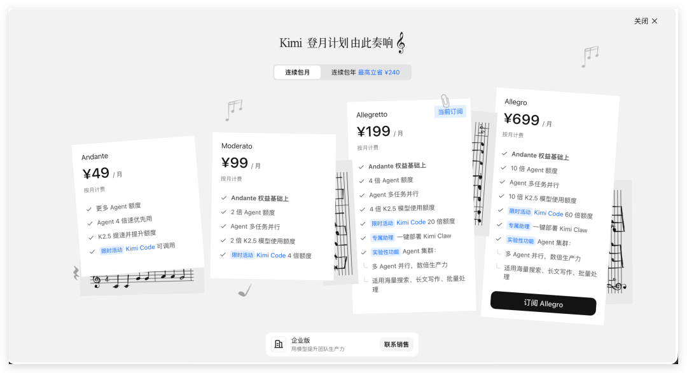
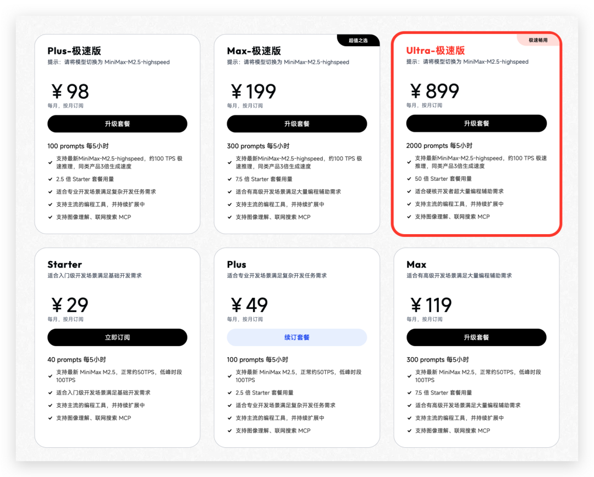
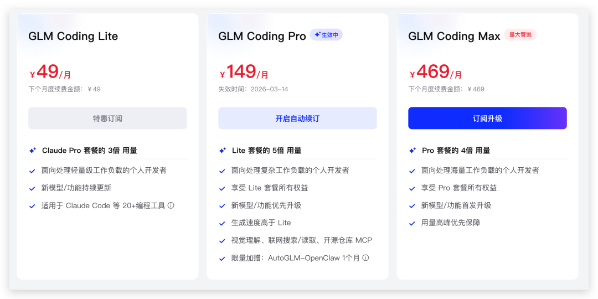
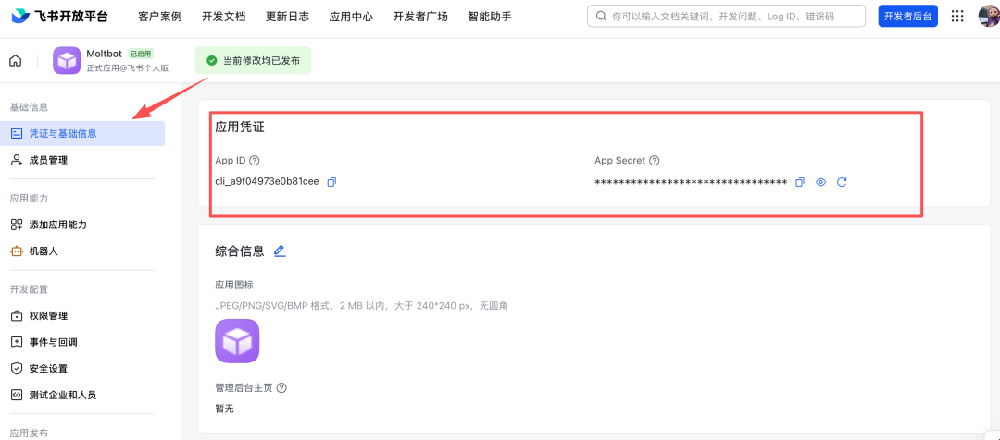

OpenClaw V3 新手起飞指南 🚀
✨ 写在前面：
这是一份专门为你精简提炼的“保姆级”新手指南。
我们剔除了早期不需要懂的底层配置和部署逻辑，为你找到了一条最平缓的入门曲线 (Sweet Spot)：从零基础 -> 拿到 API -> 成功安装 -> 接入飞书 -> 安全防泄漏 -> 学会用技能
准备好了吗？系好安全带，我们要发车了！
第一部分：揭开面纱（OpenClaw 到底是什么）
🎯 本章目标：学完这章，你能向朋友清楚解释OpenClaw是什么、能做什么、不能做什么
⏱️ 预计时间：3分钟
本章你将学会什么
• 用一句话向朋友解释OpenClaw是什么 • 三个真实场景，理解它能帮你做什么 • 澄清常见误解，知道它不能做什么 • 为什么2026年它突然火了 • 根据你的需求，选择最适合的阅读路径
1.1 一句话解释：你的AI助理，住在你的电脑里
想象一下：你招了一个实习生，这个实习生特别聪明，能帮你查资料、写文档、整理数据，还能24小时在线。但你不需要给它交社保，也不用担心它跳槽。
OpenClaw就是这个实习生，只不过它住在你的电脑里。
更准确地说：
OpenClaw是一个AI智能体平台（Agent Platform），让你能在自己的电脑上运行AI助理，并把它接入到你日常使用的工具里——比如飞书、Telegram。
几个核心概念，先混个脸熟（后面章节会详细讲）：
• Agent（智能体）：能自主执行任务的AI程序，就像一个带工具箱的实习生。你告诉它"帮我整理今天的会议纪要"，它会自己决定用什么工具、分几步完成。 • Gateway（网关）：系统的总调度室，负责消息路由和协调。默认地址是 127.0.0.1:18789，就是你电脑上开的一个端口。• Channel（渠道）：连接各种聊天平台的接口，比如飞书、Telegram。 • Tool（工具）：Agent能调用的具体功能，比如读写文件、执行命令、搜索网页。 • Skill（技能）：告诉Agent什么时候用什么工具的"说明书"。
别慌，这些词现在看着陌生，用几遍就熟了。
1.2 它能做什么：三个真实场景
光说概念太虚，来看三个真实的使用场景。
1.2.1 场景一：自动整理日报（拯救打工人）
小王每天下班前要发日报，总结今天做了什么。以前他要翻聊天记录、看邮件、回忆一天的工作，至少花20分钟。
现在他@飞书里的OpenClaw机器人：
"帮我整理今天的日报，从项目群提取关键进展，从邮件提取待跟进事项。"
机器人自动：
1. 读取指定群聊的今日消息 2. 提取关键信息 3. 按格式生成日报 4. 发到指定文档
省下的20分钟，小王可以准时下班了。
1.2.2 场景二：查资料写报告（研究员的福音）
小李需要写一篇行业分析报告，涉及大量资料搜集。以前他要在十几个网站间来回切换，复制粘贴到手软。
现在他告诉OpenClaw：
"搜索2025年AI编程助手的市场规模，整理成表格，包含数据来源。"
Agent自动：
1. 调用搜索工具查找资料 2. 访问多个网页提取信息 3. 整理成结构化表格 4. 标注数据来源
小李从"体力活"中解放出来，专注在分析和判断上。
1.2.3 场景三：飞书里@它办事（团队协作神器）
团队群里经常有人问：
• "谁能查一下上个月的销售数据？" • "帮忙翻译一下这个英文文档" • "把这份PDF转成Markdown"
现在直接在群里@机器人：
"@小助手 把刚才发的PDF转成Markdown格式"
机器人立即处理，把结果发回群里。
不用麻烦同事，不用切换工具，在聊天中就把事办了。
1.3 它不是什么：澄清常见误解
OpenClaw很强大，但它不是万能的。以下几个误解，越早澄清越好。
1.3.1 误解一：它是ChatGPT替代品
不是。
ChatGPT是一个AI对话产品，你打开网页就能聊。OpenClaw是一个平台，让你能搭建自己的AI助理。
你可以这样理解：
• ChatGPT = 一个训练有素的客服 • OpenClaw = 一个可以训练自己客服的系统
实际上，OpenClaw可以接入ChatGPT的API，也可以接入Claude、KIMI、MiniMax等其他模型。它是模型的使用者，不是模型的竞争者。
1.3.2 误解二：它是云端服务，数据存在别人服务器上
不是。
这是OpenClaw最大的特点之一：它运行在你的电脑上。
• 你的聊天记录存在本地 • 你的文件处理在本地完成 • 你的API Key不会经过第三方服务器
对于担心数据隐私的企业和个人，这是巨大的优势。
⚠️ 注意：虽然OpenClaw本身在本地运行，但它调用AI模型时需要联网。你的消息会发送到对应的AI服务商（如OpenAI、KIMI等）。
1.3.3 误解三：它会自己上网乱买东西、乱发邮件
不会。
OpenClaw的设计理念是最小权限原则。默认情况下，它什么都不能做。
• 想让它读写文件？你需要明确授权 • 想让它发邮件？你需要配置邮件工具 • 想让它执行命令？你需要开启沙箱并设置权限
而且，高风险操作可以设置二次确认，确保它不会"自作主张"。
1.4 为什么2026年它突然火了
AI Agent的概念不是2026年才有的，为什么现在才火？
1.4.1 原因一：大模型能力到了"可用"的临界点
2024年的GPT-4和Claude 3已经很强，但还不够稳定。2025-2026年的模型（Claude Opus 4.6/Sonnet 4.6、GPT-5.3-Codex、KIMI K2.5等）在理解复杂指令和稳定输出格式上有了质的飞跃。
简单说：以前的AI助理经常"听不懂人话"，现在的能听懂了。
1.4.2 原因二：工程化工具成熟了
光有聪明的大脑不够，还需要：
• 稳定的消息收发机制 • 可靠的工具调用框架 • 安全的权限管理系统 • 友好的配置界面
OpenClaw把这些工程难题都解决了，让普通用户也能搭起自己的AI助理。
1.4.3 原因三：从"玩具"到"工具"的转变
早期的AI Agent更多是极客的玩具，现在它们真的能解决实际工作问题。
• 整理日报节省20分钟 • 查资料写报告节省2小时 • 自动化数据处理节省半天
当省下的时间超过学习成本时，普及就水到渠成了。
1.5 阅读路线图：三种读者的最短路径
这本书有17章，但你不需要全部读完。根据你的需求，选择最适合的路径：
1.5.1 路径A：我只想快速用起来（推荐所有人先走这条）
目标：在飞书里@AI机器人，让它帮你办事
阅读顺序：
1. 第1章（本章）→ 了解是什么 2. 第2章 → 准备API Key 3. 第3章 → 安装OpenClaw 4. 第5章 → 接入飞书 5. 第6章 → 配置安全策略
预计时间：2-3小时
1.5.2 路径B：我想深度定制，让它做特定任务
目标：让AI助理完成我的专属任务（如数据分析、报告生成）
阅读顺序：
1. 先完成路径A（基础必须打牢） 2. 第10章 → 了解Tools能做什么 3. 第11章 → 使用现成Skills 4. 第12章 → 写第一个Skill 5. 第13章 → 进阶优化
预计时间：1-2天
1.5.3 路径C：我是技术用户，想部署到服务器
目标：在服务器上稳定运行，团队共享使用
阅读顺序：
1. 先完成路径A（了解基础） 2. 第7章 → 模型配置优化 3. 第8章 → 配置文件深入 4. 第9章 → 安全与沙箱 5. 第15章 → 多Workspace配置 6. 第16章 → 部署与运维
预计时间：2-3天
本部分小结
来，我们回顾一下：
1. OpenClaw是什么：一个AI智能体平台，让你的电脑上运行AI助理 2. 它能做什么：整理日报、查资料写报告、飞书里@它办事 3. 它不能做什么：不是ChatGPT替代品、不是纯云端服务、不会擅自行动 4. 为什么现在火了：大模型能力成熟 + 工程化工具完善 + 真正解决工作问题 5. 怎么开始：根据你的需求选择路径A、B或C
动手试试
1. 向一位朋友解释OpenClaw是什么，用本章的"带工具箱的实习生"类比 2. 思考：你日常工作中有哪些重复性任务，可能适合交给AI助理？ 3. 根据1.5节的路线图，确定你要走哪条路径
第二部分：开工准备（你只需要这三样东西）
🎯 本章目标：学完这章，你能确认自己具备开始的所有条件，并准备好API Key
⏱️ 预计时间：10分钟
本章你将学会什么
• 确认你的电脑满足运行条件 • 理解API Key是什么，以及怎么获取 • 国内三家Coding Plan的详细申请步骤（KIMI/MiniMax/GLM） • 备选方案（OpenRouter/Anthropic） • 提前预览最终效果
2.1 别慌，你只需要这三样东西
很多技术书一上来就列一堆要求，看得人想放弃。咱们换个方式：
你只需要三样东西：
1. 一台能上网的电脑（Windows/Mac/Linux都行） 2. 一个API Key（别被这个词吓到，就是一串密码） 3. 10分钟时间（和一点点耐心）
没了。不需要你是程序员，不需要你懂AI，不需要买服务器。
2.2 第一样东西：一台电脑
2.2.1 系统要求
简单说：只要是近5年的电脑，基本都能跑。
2.2.2 网络要求
你需要能访问：
• npm registry（安装OpenClaw） • 你选择的AI服务商（如KIMI、MiniMax等）
国内用户注意：OpenClaw本身不需要翻墙，但部分AI服务商可能需要。
2.3 第二样东西：一个API Key
2.3.1 API Key是什么？
API Key（应用编程接口密钥），听起来很高大上，其实就是一串密码。
类比一下：
• 饭店的VIP卡 → 证明你有资格享受服务 • 小区的门禁卡 → 证明你有权限进入 • API Key → 证明你有权限调用AI服务
每次OpenClaw让AI帮你干活，都要出示这个Key。AI服务商根据Key来：
1. 确认你是谁 2. 计算你用了多少额度 3. 决定是否响应你的请求
2.3.2 国内三家Coding Plan（推荐）
对于国内用户，我推荐优先选择以下三家。它们都有专门针对开发者的 Coding Plan，且本章统一使用国内站口径（不使用国际站路径）。
2.3.2.1 方案A：KIMI Coding Plan（推荐）

申请步骤：
1. 访问 https://www.kimi.com/code 2. 登录/注册KIMI账号 3. 点击"订阅Coding Plan" 4. 完成支付（支持支付宝/微信） 5. 进入控制台，点击"创建API Key" 6. 复制生成的Key（以 sk-开头）
💡 提示：Key创建后只显示一次，务必保存好。如果丢了，只能重新创建。
2.3.2.2 方案B：MiniMax Coding Plan（推荐）

申请步骤：
1. 访问 https://platform.minimaxi.com/subscribe/coding-plan 2. 注册/登录账号 3. 完成实名认证（需要身份证） 4. 订阅Coding Plan 5. 进入"API管理"页面 6. 创建API Key并复制
2.3.2.3 方案C：GLM Coding Plan（推荐）

申请步骤：
1. 访问 https://bigmodel.cn/glm-coding 2. 注册/登录智谱AI账号 3. 进入控制台 4. 点击"API Keys"菜单 5. 创建新的API Key 6. 复制保存
2.3.3 三家对比表
💡 说明：以上价格均按御三家国内站结算页口径记录；后续如有活动变动，请以实时页面为准。
2.3.4 备选方案
如果上述三家都不适合你，还有以下选择：
2.3.4.1 OpenRouter
特点：一个API对接多家模型（Claude、GPT、Llama等）
网址：https://openrouter.ai
适合：想用一个Key调用多种模型的用户
注意：国内访问可能需要代理
2.3.4.2 Anthropic（Claude官方）
特点：Claude模型官方API，质量顶尖
网址：https://console.anthropic.com
适合：追求最高质量回复的用户
注意：国内访问需要代理，价格较高
2.4 第三样东西：10分钟时间
这10分钟你要做什么？
保存Key的建议：
1. 不要直接保存在微信/QQ聊天记录里 2. 不要截图保存在相册里 3. 推荐保存在： • 密码管理器（1Password、Bitwarden等） • 本地文本文件（放在安全的位置） • 备忘录（如果支持加密）
⚠️ 重要：API Key就像银行卡密码，泄露了别人就能花你的钱。妥善保管！
2.5 提前看看你会得到什么
完成本书学习后，你将拥有：
一个能在飞书里@的AI机器人：
• 私聊问它问题 • 群里@它办事 • 让它帮你整理文档、查资料
一个可定制的AI助理：
• 根据你的需求写Skills • 连接你的常用工具 • 自动化重复工作
完全掌控的数据隐私：
• 所有数据存在本地 • 不经过第三方服务器 • 企业级安全保障
本部分小结
来，检查一下你的准备清单：
• 一台能上网的电脑（Windows/Mac/Linux） • 一个API Key（KIMI/MiniMax/GLM任选其一） • 10分钟时间
如果都准备好了
动手试试
1. 确认你的电脑系统版本符合要求 2. 选择一家Coding Plan，完成API Key申请 3. 把Key保存在安全的地方（推荐密码管理器） 4. 测试网络：访问你选择的AI服务商控制台，确认能正常打开
第三部分：极速安装（5分钟把神兽接回家）
🎯 本章目标：学完这章，你能完成OpenClaw安装并发出第一条消息
⏱️ 预计时间：5分钟
📋 前置要求：已完成第2章（准备工作）
本章你将学会什么
• 检查并安装Node.js环境 • 用一行命令安装OpenClaw • 运行向导完成初始化配置 • 理解QuickStart和Manual的区别 • 配置国内三家Coding Plan • 验证安装成功并发出第一条消息
3.1 环境检查：Node.js是什么？
3.1.1 Node.js简介
Node.js是一个让JavaScript能在电脑本地运行的环境。简单说：
Node.js就像JavaScript的"翻译官"，让它能在浏览器之外的地方工作。
你不需要深入理解它，只需要确认电脑上已经安装了。
3.1.2 检查Node.js版本
打开你的终端（Terminal），输入：
node --version期望看到的结果：
v22.x.x判断标准：
• ✅ 版本 >= v22：可以继续 • ❌ 版本 < v22：需要升级 • ❌ 提示"command not found"：需要安装
3.1.3 如果Node.js不符合要求
macOS安装/升级
# 使用Homebrew安装（推荐）
brew install node
# 如果已安装但版本低，升级
brew upgrade nodeWindows安装/升级
推荐方式：使用winget
winget install OpenJS.NodeJS.LTS或者手动下载：
1. 访问 https://nodejs.org 2. 下载LTS版本（长期支持版） 3. 按向导安装
💡 Windows用户注意：官方推荐在WSL2中运行OpenClaw，能避免很多奇怪问题。WSL2安装指南：https://docs.microsoft.com/zh-cn/windows/wsl/install
Linux安装/升级
Ubuntu/Debian：
curl -fsSL https://deb.nodesource.com/setup_22.x | sudo -E bash -
sudo apt-get install -y nodejsCentOS/RHEL/Fedora：
sudo dnf install nodejs3.1.4 验证安装
安装完成后，再次检查：
node --version
npm --version两个命令都应该返回版本号。
⚠️ 常见问题：如果安装后还是提示"command not found"，尝试重启终端或重新登录系统。
3.2 安装命令：就一行，复制粘贴
确认Node.js >= v22后，执行安装命令：
npm install -g openclaw@latest这行命令在做什么？
• npm：Node.js的包管理器• install：安装• -g：全局安装（在任何目录都能用openclaw命令）• openclaw@latest：安装 npm 上当前发布版（本书核验冻结点为v2026.2.17）
等待时间：取决于你的网络，通常30秒到2分钟。
3.2.1 验证安装成功
openclaw --version期望看到类似输出：
2026.2.17❌ 如果提示"command not found"
可能原因：npm全局路径未加入系统PATH
解决方法：
1. 重启终端 2. 如果还不行，检查npm全局路径： npm prefix -g3. 把返回的路径加入PATH环境变量
3.3 运行向导：openclaw onboard
安装完成后，运行初始化向导：
openclaw onboard --install-daemon参数说明：
• onboard：运行初始化向导• --install-daemon：同时安装后台服务（推荐）
3.3.1 向导第一步：风险确认 + 已有配置处理
启动向导后，通常会先看到：
? I understand this is powerful and inherently risky. Continue?
❯ Yes
No这里选 Yes 继续。
如果你之前装过 OpenClaw，还会看到：
Existing config detected
...
? Config handling
❯ Use existing values
Update values
Reset怎么选：
• 首次安装：通常不会出现这一段，直接进入下一步。 • 复装/换模型：选 Update values（推荐，保留其余稳定配置）。• 完全重来：选 Reset（谨慎）。
3.3.2 向导第二步：选择模式（Onboarding mode）
向导会问你：
? Onboarding mode
❯ QuickStart - Minimal setup, get running fast
Manual - Full control over all settings怎么选？
我的建议：第一次选 QuickStart，后面可以随时改配置。
3.3.3 向导第三步：先选模型厂商（Provider）
向导会提示你选择模型提供商：
? Which model provider would you like to use?
OpenAI
Anthropic
❯ KIMI
MiniMax
GLM
Other (custom endpoint)先选你在第2章申请的厂商（KIMI / MiniMax / GLM）。
3.3.4 向导第四步：再选鉴权方式（Auth method，容易漏）
在你选完厂商后，通常不会立刻要 Key，而是先进入该厂商的鉴权方式选择。
常见会看到类似：
? <Provider> auth method
❯ Coding Plan / OAuth
API Key国内读者建议：优先选 Coding Plan 对应项。
• KIMI：优先 Kimi Code API key (subscription)路径• MiniMax：优先 MiniMax OAuth（CN）路径• GLM（Z.AI）：优先 Coding-Plan-CN路径
3.3.5 向导第五步：输入API Key并选模型
如果选择KIMI
? Enter your KIMI API Key: [粘贴你的Key]
? Select model: ❯ kimi-k2.5如果选择MiniMax
? Enter your MiniMax API Key: [粘贴你的Key]
? Select model: ❯ MiniMax-M2.5如果选择GLM
? Enter your GLM API Key: [粘贴你的Key]
? Select model: ❯ glm-5💡 提示：粘贴API Key时，终端不会显示任何字符（为了安全），这是正常的。直接粘贴后按回车即可。
3.3.6 向导第六步：配置Channel（先Skip！）
在 QuickStart 路径下，向导会直接进入渠道单选列表：
? Select channel (QuickStart)
...
Feishu/Lark (飞书)
...
❯ Skip for now (You can add channels later via `openclaw channels add`)首次建议直接选 Skip for now。
为什么先Skip？
这是多轮实测验证出的最佳实践：
1. 先把"TUI里能稳定对话"跑通 2. 确认模型、鉴权、Gateway都正常 3. 再接入渠道，出错时能明确判断是"渠道配置问题"还是"基础环境问题"
放心，第5章会详细讲飞书接入。
3.3.7 向导第七步：配置 Skills（建议开）
Channel 之后，向导会进入 Skills 检查与可选安装：
Skills status
Eligible: ...
Missing requirements: ...
...
? Configure skills now? (recommended)
❯ Yes
No首次建议选 Yes，原因很简单：
现在就把“能自动装的依赖”装掉，后面少踩坑。
接下来常见会看到：
? Install missing skill dependencies
❯ Skip for now
<某个 skill 依赖项...>
? Preferred node manager for skill installs
❯ npm
pnpm
bun给新手的默认建议：
1. 如果你只想先跑通主线：可先 Skip for now；2. 如果你准备立刻玩 Skills：按需勾选安装项； 3. node manager选你本机已经在用的那个（不确定就用npm）。
3.3.8 向导第八步：配置 Hooks（建议最小开启）
Skills 后会进入 Hooks 配置：
Hooks
...
? Enable hooks?
❯ Skip for now
<hook 列表...>官方说明里，Hooks 用来“在某些命令触发时自动执行动作”（例如 /new 时做会话记忆整理）。
本书建议的最小策略：
1. 首次可先启用 1 个最核心 hook（最小可用，优先 session-memory，若列表里有）；2. 如果你现在还分不清 hook 的作用，也可以先 Skip for now；3. 先跑通主线，后面在第10章再系统化管理 hooks。
3.3.9 向导第九步：选择 Hatch 方式（关键）
在收尾阶段，向导会给你一个启动入口选择：
? How do you want to hatch your bot?
❯ Hatch in TUI (recommended)
Open the Web UI
Do this later怎么选：
• Hatch in TUI (recommended)：在终端里直接进入交互（最稳，推荐默认选这个）• Open the Web UI：打开浏览器控制台（图形化）• Do this later：先结束向导，稍后再进
为什么默认选 TUI：
1. 我们无法假设你一定在本机操作；很多读者是在云主机/VPS 上跑。 2. 如果是 VPS， Open the Web UI往往还要做端口转发，对新手不友好。3. 选 Hatch in TUI可以立刻开始对话，不被网络与端口问题卡住。
3.3.10 向导第十步：记录 Dashboard 链接与 Gateway 状态
在你完成 Hatch 选择后，向导会输出控制台访问信息与网关状态（如 Web UI、Gateway WS、Gateway: reachable）。
如果你选了 Open the Web UI，一般会直接给出带 token 的 Dashboard 链接并尝试自动打开浏览器。
如果你选了 Do this later，后续可用：
openclaw dashboard --no-open再次获取控制台入口。
3.4 首次对话：先完成 bootstrap（真正初始化）
onboard 完成后，建议先在 TUI 里完成第一轮 bootstrap 对话。
官方流程会把它当成“把 Agent 变成你的 Agent”的关键动作（源码里有 Wake up, my friend! 引导）。
这一步建议你主动讲清楚下面 5 件事：
1. 你是谁：怎么称呼你、你的时区和工作语言。 2. 你要它扮演什么角色：比如“我的技术写作助手”。 3. 你平时的工作场景：常用工具、文件目录、沟通方式（飞书/邮件等）。 4. 你的偏好：回答风格、长度、是否先给结论。 5. 你的边界：哪些操作必须先确认、哪些内容不要碰。
这一步做得越清楚，后续它越像“你自己的实例”，而不是“一个通用聊天机器人”。
💡 你也可以把这些信息落盘到工作区里的
BOOTSTRAP.md / IDENTITY.md / USER.md / SOUL.md，让后续会话更稳定。
3.5 Bootstrap 后，再发第一条“低上下文”消息
完成 bootstrap 后，建议先发一条不依赖你工作背景的消息做冒烟测试。
推荐你先用这条：
请给我一个“今天就能执行”的 5 条待办清单（每条不超过 18 个字），并按优先级排序。如果你想测“查询能力”，可再补一条：
请告诉我北京今天的天气，并给出穿衣建议（1 句话）。按回车发送。
期望的回复：
它应该直接给出结构化结果（清单或天气建议），而不是继续做泛泛自我介绍。
如果看到回复，恭喜你！安装成功！
3.6 如果出错了怎么办
3.6.1 问题一：Gateway启动失败
症状：向导提示Gateway failed to start
可能原因：
1. 端口18789被占用 2. 权限不足 3. 配置文件错误
解决方法：
# 查看端口占用
lsof -i :18789
# 或者换端口启动
openclaw gateway start --port 187903.6.2 问题二：发送消息无回复
症状：消息发送后，一直显示"正在输入"但没有回复
可能原因：
1. API Key错误 2. 网络不通 3. 模型服务异常
解决方法：
# 检查配置
openclaw config get
# 检查模型连接
openclaw doctor
# 查看日志
openclaw logs3.6.3 问题三：Web UI打不开
症状：浏览器访问127.0.0.1:18789显示无法连接
可能原因：
1. Gateway没启动 2. 防火墙阻挡 3. 地址输错
解决方法：
# 确认Gateway在运行
openclaw status
# 如果未运行，手动启动
openclaw gateway start本部分小结
来，回顾一下今天的成果：
1. ✅ 检查了Node.js环境（>= v22） 2. ✅ 安装了OpenClaw（ npm install -g openclaw@latest）3. ✅ 运行了初始化向导（ openclaw onboard --install-daemon）4. ✅ 配置了国内Coding Plan（KIMI/MiniMax/GLM） 5. ✅ 在收尾阶段选择了 Hatch in TUI (recommended)（默认推荐）6. ✅ 完成了首次 bootstrap（把实例初始化成“你的实例”） 7. ✅ 发出了第一条业务消息！
动手试试
1. 在 TUI 里继续对话，补充你的工作边界、偏好与禁区（完成 bootstrap） 2. 让它基于你的真实场景给出一个可执行清单（例如今天待办） 3. 如果你在本机环境，再额外打开 Dashboard/Web UI 对照体验一次 4. 如果安装过程中遇到问题，记录错误信息，对照第4章排查
第四部分：飞书接入（让它能在群里陪你聊天）
🎯 本章目标：学完这章，你能在飞书里@AI机器人，让它帮你办事
⏱️ 预计时间：30分钟
📋 前置要求：已完成第3章（安装成功，并在TUI完成bootstrap首轮对话）
本章你将学会什么
• 在飞书开放平台创建企业应用 • 获取App ID和App Secret • 配置权限（含批量导入JSON） • 理解"先发布→再配置→再开长连接"的关键时序 • 在OpenClaw侧配置飞书渠道 • 完成配对并验证收发
5.1 为什么第3章让你先Skip Channel
还记得第3章的配置向导吗？我们在Channel那一步选择了Skip。
这不是省略，而是有意为之。
实测经验告诉我们：
• 先把"TUI里能稳定对话"跑通，确认模型、鉴权、Gateway都正常 • 再做渠道接入，出错时就能明确判断是"渠道配置问题"还是"基础环境问题" • 这种"两段式"路径成功率更高，也更容易排错
如果你已经完成第3章，并且在 TUI 里完成了 bootstrap 初始化，这一章就是你的下一步。
5.2 飞书接入的整体流程
不管你接的是哪家平台，基本都遵循同一条流水线：
1. 平台侧建应用（拿到凭证） 2. OpenClaw侧配置渠道（ openclaw channels add）3. 启动Gateway并验证收发 4. 配对/白名单放行 5. 再做群聊策略、提及策略和风控
你可以把这5步理解为"固定骨架"。本章先把飞书走通，其他渠道请走补充章或官方渠道文档。
5.3 阶段一：飞书私聊机器人（降低复杂度）
本节按两段走：
1. 第一阶段：飞书私聊机器人可稳定收发 2. 第二阶段：飞书群聊里@机器人可回复
为什么要分两段？
排障时，私聊比群聊简单得多。先确保私聊通，再搞群聊，能大幅降低复杂度。
5.4 Step 1：在飞书开放平台创建应用
5.4.1 打开平台并创建企业应用
1. 打开飞书开放平台：https://open.feishu.cn/app 2. 登录你的飞书账号（需要有企业管理员权限） 3. 点击"创建企业自建应用"
1. 填写应用信息： • 应用名称：建议用"AI助手"或"OpenClaw" • 应用描述：内部使用的AI助手 • 图标：可以上传一个机器人图标
5.4.2 获取App ID与App Secret
创建完成后，进入应用详情页：
1. 点击左侧"凭证与基础信息" 2. 记录以下信息： • App ID（形如 cli_xxxxxxxxxxxxxxxx）• App Secret（点击"查看"按钮显示）

⚠️ 重要：App Secret务必保密，不要截图外传，不要发到群里。泄露了别人就能控制你的机器人。
5.4.3 权限配置（批量导入）
这是最容易出错的步骤，仔细跟着做。
1. 点击左侧"权限管理" 2. 点击"批量导入权限" 3. 粘贴以下内容：
{
"scopes": {
"tenant": [
"aily:file:read",
"aily:file:write",
"application:application.app_message_stats.overview:readonly",
"application:application:self_manage",
"application:bot.menu:write",
"contact:user.employee_id:readonly",
"corehr:file:download",
"event:ip_list",
"im:chat.access_event.bot_p2p_chat:read",
"im:chat.members:bot_access",
"im:message",
"im:message.group_at_msg:readonly",
"im:message.p2p_msg:readonly",
"im:message:readonly",
"im:message:send_as_bot",
"im:resource"
],
"user": [
"aily:file:read",
"aily:file:write",
"im:chat.access_event.bot_p2p_chat:read"
]
}
}1. 点击"确定"
这些权限是做什么的？
5.4.4 启用Bot能力
1. 点击左侧"应用能力" 2. 找到"机器人"卡片，点击"启用" 3. 设置机器人名称（建议和应用名称一致） 4. 点击"保存"
5.4.5 首次发布应用（⚠️ 关键步骤！）
切记：这一步必须在开启长连接之前完成！
实测经验：如果还没先发布应用就直接开启"长连接订阅"，通常会持续失败。
发布步骤：
1. 点击左侧"版本管理与发布" 2. 点击"创建版本" 3. 填写版本信息： • 版本号：1.0.0 • 更新说明：初始版本 4. 点击"保存" 5. 点击"申请发布" 6. 等待企业管理员审批（如果是你自己的企业，通常自动通过）
💡 提示：审批通过后，应用状态会变为"已发布"。这时候才能进行下一步。
5.5 Step 2：在OpenClaw配置飞书
5.5.1 启用飞书插件
先查看插件列表：
openclaw plugins list如果存在feishu且状态是disabled，启用它：
openclaw plugins enable feishu💡 提示：官方文档也给出
openclaw plugins install @openclaw/feishu。但结合本书的实测，优先启用内置插件更稳定。
5.5.2 交互式添加Channel
运行命令：
openclaw channels add按提示完成配置：
问题1：选择渠道类型
? Select channel type:
❯ Feishu/Lark (飞书)
Telegram
WebChat
...选择Feishu/Lark (飞书)
问题2：输入App ID
? Enter Feishu App ID: cli_xxxxxxxxxxxxxxxx粘贴你在5.4.2获取的App ID
问题3：输入App Secret
? Enter Feishu App Secret: [粘贴Secret]粘贴你在5.4.2获取的App Secret（粘贴时不显示字符，这是正常的）
问题4：选择飞书域名
? Which Feishu domain?
❯ feishu.cn (国内版)
larksuite.com (国际版)国内用户选feishu.cn
问题5：群聊策略
? Group chat policy:
❯ disabled (先不通群聊)
enabled先选disabled，等私聊通了再开群聊。
问题6：需要mention才回复？
? Require mention in group chats?
❯ yes (群里需要@才回复)
no选yes，避免机器人在群里乱说话。
5.5.3 验证配置
配置完成后，查看Channel列表：
openclaw channels list应该显示：
NAME TYPE STATUS
feishu feishu configured5.6 Step 3：开启事件订阅（长连接）
5.6.1 关键时序（⚠️ 血的教训）
正确的时序是：
1. ✅ 飞书侧：创建应用 → 配置权限 → 发布应用 2. ✅ OpenClaw侧： channels add配置渠道3. ✅ OpenClaw侧：启动Gateway 4. ✅ 飞书侧：开启事件订阅（长连接） 5. ✅ 飞书侧：配置事件订阅地址
如果顺序错了，长连接会订阅失败，表现为"消息发出去，机器人没反应"。
5.6.2 启动Gateway
openclaw gateway start确认输出：
✓ Gateway started on http://127.0.0.1:187895.6.3 在飞书平台开启事件订阅
1. 回到飞书开放平台 2. 点击左侧"事件与回调" 3. 在"事件订阅方式"中，选择"长连接"
1. 点击"保存"
5.6.4 添加事件订阅
在"订阅事件"区域，点击"添加事件"：
1. 搜索 im.message.receive_v12. 勾选并确认添加
这个事件表示"收到消息时通知我"。
5.7 Step 4：配对与放行
5.7.1 私聊机器人触发配对
在飞书里：
1. 搜索你的机器人名称 2. 进入私聊界面 3. 发送任意消息，比如"你好"
这时候消息还到不了 OpenClaw，因为需要先“配对”。
在默认 dmPolicy: pairing 下，机器人会在飞书私聊里直接回一条配对提示，里面包含一段配对码（Pairing code）。
这就是对用户最直观、最容易拿到 code 的路径。
5.7.2 方式A（推荐）：直接用私聊里的配对码批准
让用户把飞书私聊里看到的 Pairing code 发给管理员（或你自己复制）。
然后在终端执行：
openclaw pairing approve feishu <CODE>例如：
openclaw pairing approve feishu A1B2C3D4（把 A1B2C3D4 替换成飞书私聊里看到的真实配对码）
5.7.3 方式B（备选）：在OpenClaw里查配对请求
如果你没看到私聊里的 code，或者想二次核对，再在终端运行：
openclaw pairing list feishu应该显示：
Code ID Meta Requested
A1B2C3D4 ou_xxx... {...} 2026-02-18T10:10:00.000Z再执行批准：
openclaw pairing approve feishu A1B2C3D4（把 A1B2C3D4 换成上一步看到的真实配对码 Code）
5.7.4 验证私聊
回到飞书，再次发送消息：
你好，请介绍一下你自己期望结果：机器人回复消息！
5.8 Step 5：开启群聊（可选）
私聊通了之后，可以开启群聊功能。
5.8.1 修改Channel配置
openclaw channels add --channel feishu修改：
• groupChat:enabled• requireMention:true
5.8.2 把机器人拉进群
1. 在飞书里创建一个群 2. 点击"添加机器人" 3. 搜索你的机器人名称 4. 添加进群
5.8.3 群里@机器人测试
在群里发送：
@AI助手 你好期望结果：机器人回复消息！
5.9 验收清单
完成本章后，你应该能：
• 在飞书开放平台创建并发布企业应用 • 获取App ID和App Secret • 配置权限并启用Bot能力 • 在OpenClaw侧配置飞书Channel • 开启长连接订阅 • 完成配对并批准 • 私聊机器人能收到回复 • （可选）群聊@机器人能收到回复
本部分小结
飞书接入的核心要点：
1. 先发布，再开长连接 —— 时序错了会订阅失败 2. 先私聊，再群聊 —— 降低排障复杂度 3. 配对要批准 —— 安全第一，不让陌生人随便用 4. 权限要配全 —— JSON批量导入最省事
动手试试
1. 在飞书里和机器人私聊，测试各种功能 2. 尝试让机器人帮你整理一段文字 3. 如果公司有测试群，把机器人拉进去试试@功能 4. 记录遇到的问题，对照本章排查
第五部分：安全防护（别让它在公司大群乱回消息）
🎯 本章目标：学完这章，你能掌握飞书渠道的安全配置，避免"机器人乱回"的尴尬
⏱️ 预计时间：20分钟
📋 前置要求：已完成第5章（飞书基础接入）
本章你将学会什么
• 理解三种私聊策略的区别（pairing/allowlist/all） • 掌握群聊策略配置（requireMention的重要性） • 配置白名单（allowFrom/groupAllowFrom） • 上线前的风控checklist • 解决长连接订阅失败、消息不回、@没反应等常见问题
6.1 为什么需要安全配置
先讲一个"血的教训"：
某公司把OpenClaw机器人接入飞书，没做安全配置。结果机器人被拉进一个有500人的大群，有人@它问了个敏感问题，机器人直接回复了内部数据。群里瞬间炸了。
安全问题不是"会不会发生"，而是"什么时候发生"。
本章的配置，就是给你的机器人上把锁。
6.2 私聊策略：谁能和机器人说话
OpenClaw提供三种私聊策略，在配置Channel时选择：
6.2.1 策略一：pairing（推荐）
机制：用户必须先发送消息申请配对，管理员批准后才能对话
适用场景：
• 企业内部使用 • 需要控制谁能使用机器人 • 安全第一的场景
配置方式：
openclaw channels add --channel feishu设置privateChat: pairing
用户流程：
1. 用户私聊机器人发送任意消息 2. 消息被拦截，提示"等待管理员批准" 3. 管理员先执行 openclaw pairing list feishu获取Code，再执行openclaw pairing approve feishu <CODE>4. 用户才能正常对话
6.2.2 策略二：allowlist
机制：只有白名单里的用户能和机器人对话
适用场景：
• 明确知道谁需要用机器人 • 人数不多的小团队
配置方式：
{
"privateChat": "allowlist",
"allowFrom": ["user1@company.com", "user2@company.com"]
}6.2.3 策略三：all（不推荐）
机制：任何人都能和机器人对话
适用场景：
• 公开演示 • 内部完全信任的环境
风险：
• 任何人都能消耗你的API额度 • 任何人都能看到机器人的回复
6.3 群聊策略：别让它乱回消息
6.3.1 requireMention：群聊的保险栓
这个配置强烈建议开启！
机制：机器人在群里只回复@它的消息，无视其他消息
为什么重要？
想象这个场景：
• 群里500人，聊得热火朝天 • 机器人监听所有消息 • 有人随口说了句"帮我查一下上个月的销售额" • 机器人以为是命令，开始执行...
配置方式：
openclaw channels add --channel feishu设置requireMention: true
6.3.2 群聊白名单：谁能拉机器人进群
即使开启了requireMention，也建议配置群聊白名单：
{
"groupChat": "enabled",
"groupAllowFrom": ["group1_id", "group2_id"],
"requireMention": true
}怎么获取群ID？
在飞书群里，点击群设置 → 群信息，可以看到群ID。
6.4 风控checklist：上线前的5个检查项
在把机器人正式投入使用前，按这个清单检查：
6.4.1 Checklist
• 私聊策略：确认是pairing或allowlist，不是all • 群聊策略：确认开启了requireMention • 群聊白名单：确认只允许必要的群使用 • API额度：确认有足够的余额，设置预算上限 • 敏感工具：确认高风险工具（如执行命令）已限制或关闭
6.4.2 设置预算上限
# 查看当前预算设置
openclaw config get budget.monthly
# 设置月度预算上限（美元）
openclaw config set budget.monthly 506.4.3 限制高风险工具
在配置文件中，限制Agent能使用的工具：
{
"agents": {
"default": {
"tools": {
"allow": ["read_file", "write_file", "search_web"],
"deny": ["execute_command", "send_email"]
}
}
}
}6.5 常见问题排查
6.5.1 问题一：长连接订阅失败
症状：飞书平台显示"长连接订阅失败"或"连接超时"
可能原因：
1. 应用未发布就开启长连接 2. Gateway未启动 3. 网络不通
解决步骤：
1. 确认应用已发布（版本管理与发布 → 状态为"已发布"） 2. 确认Gateway在运行： openclaw status3. 重启长连接： • 在飞书平台关闭长连接，保存 • 再开启长连接，保存
6.5.2 问题二：消息发出去，机器人没反应
症状：飞书里发消息，机器人不回复
排查流程：
1. 检查Gateway状态
openclaw status
2. 检查Channel状态
openclaw channels list
3. 检查配对状态
openclaw pairing list feishu
4. 查看日志
openclaw logs常见原因：
• 用户未配对（状态pending） • 私聊策略是allowlist但用户不在列表里 • 群聊没开requireMention但用户没@机器人
6.5.3 问题三：@机器人没反应
症状：群里@机器人，但它不回复
排查步骤：
1. 确认 requireMention配置为true2. 确认@的是正确的机器人（不是同名机器人） 3. 检查机器人是否在群里（可能被移出） 4. 查看日志确认收到消息： openclaw logs --follow
6.5.4 问题四：机器人回复很慢
症状：消息发出去，要等很久才收到回复
可能原因：
1. 模型响应慢 2. 网络延迟 3. Skill执行耗时
优化建议：
• 切换到响应更快的模型（如MiniMax） • 检查网络连接 • 简化Skill的调用链
6.5.5 问题五：机器人乱回消息
症状：机器人在不该回复的时候回复了
立即处理：
1. 临时禁用Channel： openclaw config set channels.feishu.enabled false2. 检查配置： • 私聊策略是否太宽松 • 群聊是否没开requireMention • 白名单是否配置正确 3. 修复配置后重新启用： openclaw config set channels.feishu.enabled true
6.6 安全配置最佳实践
6.6.1 企业级部署建议
{
"channels": {
"feishu": {
"privateChat": "pairing",
"groupChat": "enabled",
"groupAllowFrom": ["approved_group_1", "approved_group_2"],
"requireMention": true,
"maxMessageLength": 2000,
"rateLimit": {
"perUser": 30,
"perGroup": 100
}
}
}
}6.6.2 个人使用建议
{
"channels": {
"feishu": {
"privateChat": "pairing",
"groupChat": "disabled",
"requireMention": true
}
}
}本部分小结
安全配置的核心原则：
1. 宁可多确认一次 —— pairing策略虽然麻烦，但安全 2. 群聊必须@才回 —— requireMention是保险栓 3. 白名单限制范围 —— 明确谁能用、在哪用 4. 预算上限防刷爆 —— 避免一觉醒来账单惊人
动手试试
1. 检查你当前的飞书配置，对照6.4的checklist 2. 如果私聊策略是all，改成pairing 3. 确认requireMention已开启 4. 设置一个月度预算上限 5. 邀请一位同事测试配对流程
第六部分：挑选大脑（KIMI、MiniMax、GLM 怎么选）
🎯 本章目标：学完这章，你能根据需求选择最适合的模型，并正确配置
⏱️ 预计时间：20分钟
📋 前置要求：已完成第3章（基础安装）
本章你将学会什么
• 国内三家Coding Plan的能力对比 • KIMI Coding Plan的详细配置步骤 • MiniMax Coding Plan的详细配置步骤 • GLM Coding Plan的详细配置步骤 • 模型切换与回退配置 • 成本监控方法
7.1 三家对比（国内站口径）
7.1.1 快速对比表
moonshot/kimi-k2.5 | minimax/MiniMax-M2.5 | zai/glm-5 | |
usercenter 管理计划与 Key | |||
💡 说明：本章只使用御三家国内站口径；价格会随活动变动，购买前请以结算页实时显示为准。
7.1.2 我的建议
先选你已开通套餐的一家（最稳妥）
先跑通、再优化，是对小白最友好的路径。先用已开通套餐的那一家完成第3章的安装和首轮对话，避免在起步阶段增加变量。
如果三家都能用，再按任务类型切：
• 长文档整理、长上下文问答：先试 moonshot/kimi-k2.5• 响应速度优先、需要快速往返：先试 minimax/MiniMax-M2.5• 通用型任务、希望策略更均衡：先试 zai/glm-5
上述建议是实操经验路径，不是官方性能排名；最终以你自己的任务实测为准。
7.2 KIMI Coding Plan配置
7.2.1 获取API Key
1. 访问 https://www.kimi.com/code 2. 登录/注册KIMI账号 3. 点击"订阅Coding Plan" 4. 完成支付（支持支付宝/微信） 5. 进入控制台，点击"API管理" 6. 点击"创建API Key" 7. 复制生成的Key（以 sk-开头）
7.2.2 在OpenClaw配置KIMI
方式一：通过向导配置
openclaw onboard选择KIMI，粘贴API Key。
方式二：手动配置
# 先完成 KIMI 鉴权
openclaw onboard --auth-choice kimi-code-api-key
# 设置默认模型（provider/model）
openclaw models set moonshot/kimi-k2.57.2.3 KIMI可用模型
推荐：日常使用选kimi-k2.5，复杂推理再切kimi-k2-thinking。
7.3 MiniMax Coding Plan配置
7.3.1 获取API Key
1. 访问 https://platform.minimaxi.com/subscribe/coding-plan 2. 注册/登录账号 3. 完成实名认证（按页面提示） 4. 订阅Coding Plan 5. 进入"API管理"页面 6. 创建API Key并复制
7.3.2 在OpenClaw配置MiniMax
通过向导配置：
openclaw onboard选择MiniMax，粘贴API Key。
手动配置：
# 先完成 MiniMax 鉴权（优先 Coding Plan/OAuth）
openclaw onboard --auth-choice minimax-portal
# 设置默认模型（provider/model）
openclaw models set minimax/MiniMax-M2.57.3.3 MiniMax可用模型
推荐：默认选minimax/MiniMax-M2.5，追求速度再切 Lightning。
7.4 GLM Coding Plan配置
7.4.1 获取API Key
1. 访问 https://bigmodel.cn/glm-coding 2. 注册/登录智谱AI账号 3. 进入控制台 4. 点击"API Keys"菜单 5. 创建新的API Key 6. 复制保存
7.4.2 在OpenClaw配置GLM
通过向导配置：
openclaw onboard选择GLM，粘贴API Key。
手动配置：
# 先完成 Z.AI 鉴权（GLM）
openclaw onboard --auth-choice zai-api-key
# 设置默认模型（provider/model）
openclaw models set zai/glm-57.4.3 GLM可用模型
推荐：默认选zai/glm-5，轻任务可切zai/glm-4.7-flash。
7.5 模型切换与回退
7.5.1 配置主模型和备用模型
OpenClaw支持配置主模型（primary）和备用模型（fallbacks）：
{
"models": {
"primary": {
"provider": "kimi",
"model": "kimi-k2.5",
"apiKey": "sk-xxx"
},
"fallbacks": [
{
"provider": "minimax",
"model": "MiniMax-M2.5",
"apiKey": "xxx"
},
{
"provider": "glm",
"model": "glm-5",
"apiKey": "xxx"
}
]
}
}工作原理：
1. 优先使用primary模型 2. 如果primary失败（如额度用完、服务异常），自动切换到fallbacks[0] 3. 如果fallbacks[0]也失败，切换到fallbacks[1] 4. 以此类推
7.5.2 动态切换模型
在对话中临时切换模型：
@agent 使用MiniMax回答这个问题或在配置中设置规则：
{
"routing": {
"byTask": {
"coding": "kimi",
"quickReply": "minimax",
"longDoc": "kimi"
}
}
}7.6 成本监控
7.6.1 设置预算上限
# 设置月度预算（美元）
openclaw config set budget.monthly 50
# 设置单日预算
openclaw config set budget.daily 5达到预算上限后，OpenClaw会：
• 发送警告通知 • 暂停非必要调用 • 保留紧急功能
7.6.2 查看使用统计
# 查看本月使用情况
openclaw gateway usage-cost
# 输出示例：
# Provider Requests Tokens Cost(USD)
# kimi 1,234 5.2M $12.34
# minimax 567 2.1M $5.67
# Total 7.3M $18.017.6.3 成本控制技巧
1. 选择合适的模型 • 简单任务用轻量模型（zai/glm-4.7-flash） • 复杂任务才用强模型（moonshot/kimi-k2.5） 2. 限制上下文长度 {
"models": {
"primary": {
"maxTokens": 4000
}
}
}3. 设置调用频率限制 {
"rateLimit": {
"perMinute": 30,
"perHour": 500
}
}
本部分小结
模型配置的核心要点：
1. 长文档先试KIMI —— 长上下文任务更顺手 2. 响应速度优先试MiniMax —— 对话往返更轻快 3. 通用任务优先试GLM —— 作为均衡选项 4. 配置fallbacks —— 避免单点故障 5. 设置预算上限 —— 防止意外账单
动手试试
1. 如果你还没申请Coding Plan，选择一家申请 2. 配置好你的主模型 3. 设置一个月度预算上限 4. 测试不同模型的响应速度和质量 5. （可选）配置一个fallback模型
第七部分：装备技能（让它学会自动生成日报）
🎯 本章目标：学完这章，你能搜索、安装、使用现成的Skills
⏱️ 预计时间：15分钟
📋 前置要求：已完成第10章（了解Tools）
本章你将学会什么
• ClawHub是什么 • 搜索和安装Skills • 验证Skills可用性 • 从安装到调用的完整流程 • 更新与回退处理
11.1 ClawHub是什么
11.1.1 类比理解
• ClawHub = Skill的应用商店 • Skill = App • 安装Skill = 下载App • 使用Skill = 打开App使用功能
11.1.2 ClawHub的特点
• 公共注册中心：Skills 公开可见，便于复用 • 支持版本化：每次发布都有版本记录 • CLI 友好：可直接搜索、安装、更新、发布 • 可审核治理：支持举报与管理流程
11.1.3 ClawHub地址
网站：https://clawhub.com
11.2 搜索与安装
11.2.1 命令行搜索
# 搜索关键词（推荐带引号）
openclaw skills list --eligible "daily report"
openclaw skills list --eligible "github review"
openclaw skills list --eligible "meeting notes"输出示例：
NAME DESCRIPTION VERSION
---- ----------- -------
daily-report 自动生成日报 1.2.0
daily-summary 总结一天的工作内容 1.0.5
github-pr-helper GitHub PR审查助手 2.1.011.2.2 安装Skill
# 安装指定 Skill
不需要手动 install，Agent 会在需要时自动检索并拉取 daily-report如果你要安装特定版本：
不需要手动 install，Agent 会在需要时自动检索并拉取 daily-report --version 1.2.0安装过程：
1. 从ClawHub下载Skill包 2. 解压到工作区 skills目录3. 记录到 .clawhub/lock.json4. 在下一次会话中由 OpenClaw 加载
11.2.3 查看已安装清单（ClawHub侧）
clawhub list11.3 验证可用性
11.3.1 查看已安装Skills
# 列出所有已安装Skills
openclaw skills list
# 输出示例：
# NAME VERSION STATUS
# ---- ------- ------
# daily-report 1.2.0 installed
# github-pr-helper 2.1.0 installed11.3.2 检查Skills是否可用
# 检查所有Skills的可用性
openclaw skills list --eligible
# 输出示例：
# NAME STATUS REASON
# ---- ------ ------
# daily-report ✓ eligible All requirements met
# github-pr-helper ✗ missing Missing tool: github_apieligible表示：
• Skill已正确安装 • 所有依赖的Tools都已启用 • 可以正常使用
11.3.3 查看Skill详情
openclaw skills info daily-report输出示例：
Name: daily-report
Version: 1.2.0
Path: ~/.openclaw/workspace/skills/daily-report
Requirements:
- read_file ✓
- write_file ✓
- fetch_url ✓
Inputs:
- date: 日期（可选，默认今天）
- sources: 数据源（如：email,calendar）提醒：实际路径以你的 workspace 为准，通常是
<workspace>/skills/<name>/SKILL.md，默认 workspace 常见为~/.openclaw/workspace。
11.4 第一个Skill：从安装到调用
11.4.1 安装示例Skill
我们以daily-report为例：
# 安装
不需要手动 install，Agent 会在需要时自动检索并拉取 daily-report
# 验证安装
openclaw skills list --eligible11.4.2 调用Skill
方式一：在对话中直接调用
用户：运行daily-report生成今天的日报
Agent：调用daily-report Skill，生成日报方式二：使用命令
openclaw agent --message "调用 daily-report 生成今天的日报"方式三：带参数调用
openclaw agent --message "调用 daily-report，日期=2026-02-18，数据源=email,calendar"11.4.3 查看执行结果
Skill执行后，会：
1. 显示执行日志 2. 返回执行结果 3. （可选）生成输出文件
✓ daily-report executed successfully
Output: /home/user/reports/daily-2026-02-18.md
Time: 3.2s11.5 更新与回退处理
11.5.1 更新Skills
# 更新指定Skill
clawhub update daily-report
# 更新所有Skills
clawhub update --all11.5.2 回退或覆盖安装
# 强制覆盖当前目录中的同名 Skill
不需要手动 install，Agent 会在需要时自动检索并拉取 daily-report --force如果你要“停用”某个 Skill，建议在 OpenClaw 配置里将对应条目 enabled: false，而不是直接删除文件夹。
11.6 推荐Skills清单
11.6.1 生产力类
11.6.2 开发类
11.6.3 内容类
本部分小结
使用Skills的核心要点：
1. ClawHub是应用商店 - 搜索、安装、更新Skills 2. 先检查eligible - 确保Skill可以正常使用 3. 多种调用方式 - 对话、命令、带参数 4. 更新要可回退 - 尽量固定版本或保留变更记录
动手试试
1. 搜索感兴趣的Skills 2. 安装一个Skill（推荐daily-report） 3. 检查它是否eligible 4. 尝试调用它 5. 运行一次 clawhub list记录当前安装状态
🎉 结语：你的 AI 助理已经准备就绪
恭喜你！读到这里，你已经成功跨越了 OpenClaw 的新手村。
你现在不仅拥有了一个能在终端里跑的智能体，还把它成功接到了飞书里，并且学会了如何给它上“安全锁”、如何挑选最划算的国产大模型，甚至掌握了给它配置“技能”的方法。
从今天起，它不再是冷冰冰的代码，而是你专属的、7x24小时随时待命的 AI 实习生！
接下来的路，就看你如何发挥想象力，用它来解放你的双手了。如果未来你需要把它部署到服务器上，或者想自己动手写一个独一无二的 Skill，再去翻阅完整的官方文档也不迟。
祝你和你的 OpenClaw 合作愉快！🚀